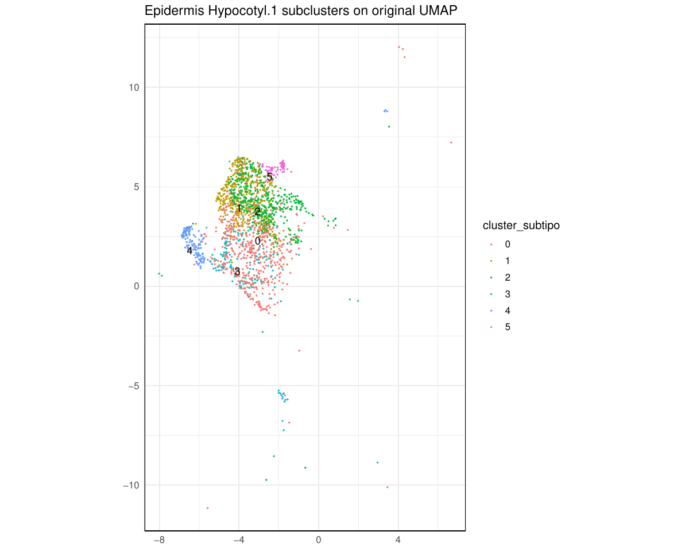
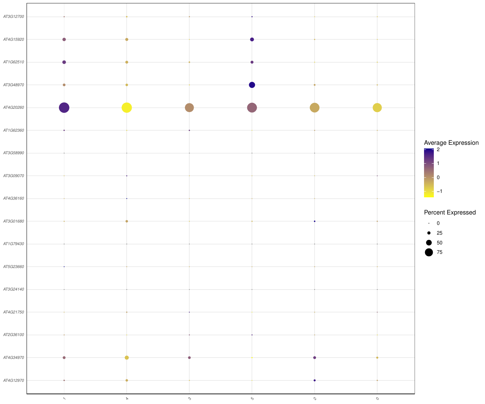
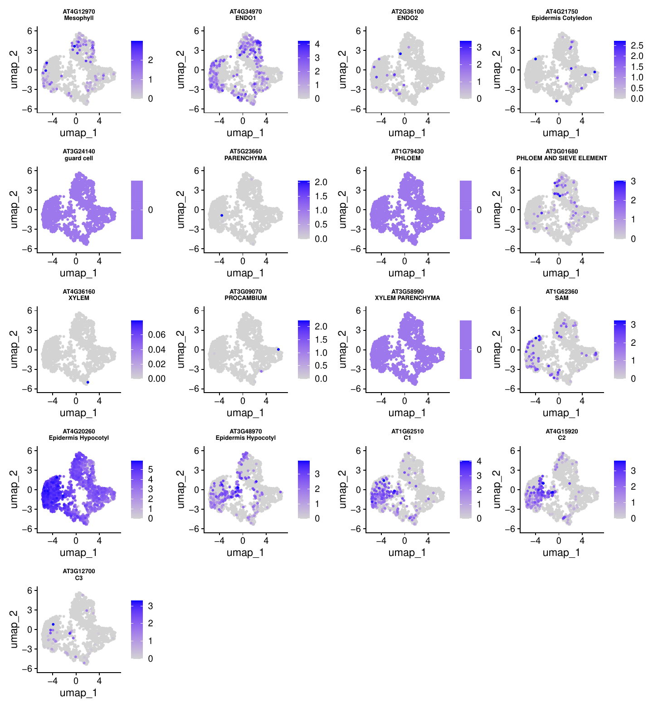

Computational Methods for Single-Cell RNA-Seq Analysis of Arabidopsis thaliana
WT vs pifq workflow: data download, Cell Ranger processing, Seurat analysis, pseudobulk DE, GO, heatmap and networks
SingleCell Pipeline
2026-07-15
Materials and Methods
Purpose of this document
This document presents a practical tutorial for the
WT/pifq dataset. It starts by cloning the repository and then treats that
clone as the project root for every later command. Raw reads, reference
files, Cell Ranger outputs, Docker execution, and workflow results are
all placed under that same Git working directory. The sections then continue without restarting the environment.
Section 0.1 - Working directory and repository
The first step is to clone the SingleCell repository. After entering the
clone, PROJECT_DIR="$(pwd)" becomes the root used by the
rest of the tutorial. This keeps each dataset self-contained: data,
references, Cell Ranger output, marker files, and downstream results are
stored inside the cloned repository folder, while Git tracks only the
code and documentation.
bash
git clone https://github.com/cliford2001/SingleCell.git
cd SingleCell
PROJECT_DIR="$(pwd)"
mkdir -p data/raw references cellranger
export PATH="$PROJECT_DIR/tools/cellranger:$PATH"
git status
In this layout, PROJECT_DIR is the cloned
SingleCell folder. The adapted Seurat preprocessing script is
workflow/capitulo1_wt_pifq.R. The output folder
resultados_wt/ is created automatically by the R pipeline,
so it does not need to be created manually before running the workflow.
The repository also includes a lightweight Cell Ranger launcher at
tools/cellranger/cellranger; adding that folder to
PATH lets users type cellranger directly.
Section 0.2 - Raw data download
The raw reads for this WT/pifq test were staged from GSA accession
CRA010863. The two runs used here were
CRR775297 and CRR775298. The original files
were downloaded by FTP and then symlinked into the Illumina-style naming
expected by Cell Ranger.
After download, the server contained four compressed FASTQ files totaling
approximately 65 GB. Cell Ranger uses the --sample argument
to select files by prefix, so the downloaded CRR files were symlinked to
sample names that match the cellranger count commands.
Sample mapping used here: ScWT comes from
CRR775298, and Scpifq comes from
CRR775297.
Section 0.3 - Reference preparation for Cell Ranger
Cell Ranger requires an indexed transcriptome reference generated with
cellranger mkref. In this server run, the reference was
is hosted as a raw directory on VirtualPlant and can be downloaded into
the repository under references/. Its metadata reports
Arabi.fasta and Arabi.gtf as source inputs,
genome name Ara, Araport11 gene annotation, and
cellranger-9.0.1 as the mkref version.
bash
cd "$PROJECT_DIR"
cd references
wget -r -np -nH --cut-dirs=2 -R "index.html*" \
http://virtualplant.bio.puc.cl/share/singlecell/Arabidopsis_thaliana_Araport11_CellRanger_reference/
cd "$PROJECT_DIR"
REF="$PROJECT_DIR/references/Arabidopsis_thaliana_Araport11_CellRanger_reference"
find "$REF" -maxdepth 2 -type f | sort
cat "$REF/reference.json"
If the reference needs to be rebuilt from FASTA and GTF files, stage the
genome FASTA and annotation GTF in a reference source folder and run
cellranger mkref. The exact FASTA/GTF download source should
be recorded with the project because it defines the gene model used for
all later counts.
bash
mkdir -p reference_source
cd reference_source
# Cell Ranger must be available in PATH.
cellranger --version
# Place the Arabidopsis genome FASTA and Araport11 GTF here.
# Example expected local names:
# Arabi.fasta
# Arabi.gtf
cellranger mkref \
--ref-version=Araport11 \
--genome=Ara \
--fasta=Arabi.fasta \
--genes=Arabi.gtf \
--nthreads=16 \
--memgb=64
Section 0.4 - Cell Ranger count generation
Cell Ranger is not executed inside the R/Python Docker container. Install
it once from 10x Genomics, load it from the server environment, or place
the extracted official folder under tools/cellranger/. The
repository launcher then makes the command cellranger
available without writing a machine-specific path in the tutorial. The
server run used Cell Ranger 7.1.0 for read alignment and
count matrix generation. Both WT and pifq were processed with
--localcores=80 and --no-bam. The
--no-bam flag reduces disk use by skipping BAM output.
bash
cd "$PROJECT_DIR"
REF="$PROJECT_DIR/references/Arabidopsis_thaliana_Araport11_CellRanger_reference"
FASTQS="$PROJECT_DIR/data/raw/CRA010863"
export PATH="$PROJECT_DIR/tools/cellranger:$PATH"
cellranger --version
bash workflow/run_cellranger_wt_pifq.sh
The helper script above keeps the Cell Ranger command short and
reproducible. Internally, it verifies that cellranger is
available, checks that the reference and FASTQs exist, writes output under
cellranger/, and skips a sample if
outs/metrics_summary.csv already exists.
The workflow uses the standard filtered matrices:
cellranger/ScWT/outs/filtered_feature_bc_matrix and
cellranger/Scpifq/outs/filtered_feature_bc_matrix. The
Cell Ranger summaries reported 4,067 estimated WT cells and 7,006
estimated pifq cells before the downstream Seurat filtering step.
Section 0.5 - Seurat workflow in R
Bibliography marker file
Before launching the R workflow, place a bibliography marker table in the
repository root. The workflow expects a plain text, tab-separated file
named biblio_marks_custom.txt. The file can be created in
any text editor, Excel/Numbers exported as TSV, or directly in the
terminal. It is not restricted to the markers shown here: any
bibliography-supported marker set can be used as long as the file keeps
the two required columns, cell types and gene.
The row order is preserved in the marker dotplot.
One possible way to create that file from the terminal is:
bash
cd "$PROJECT_DIR"
nano biblio_marks_custom.txt
Save the file as tab-separated text. Repeated cell-type names are allowed
when several genes support the same annotation, for example multiple
Epidermis Hypocotyl markers.
Start the R session
Once the Cell Ranger matrices and marker file exist, start the Docker
container and open R. The next blocks are meant to be copied and pasted
section by section inside that R session. This keeps the workflow
inspectable instead of running the whole workflow as one automatic script.
bash
cd "$PROJECT_DIR"
docker run -it --rm \
-v "$PROJECT_DIR:/workspace" \
-w /workspace \
matigara/scrnaseq:latest /bin/bash
R
Section 0.6 - Initialization
The R workflow loads the package set, plotting helpers, and core Seurat
functions from the cloned repository. The output root for this dataset is
resultados_wt/.
The first R section loads each Cell Ranger matrix into a Seurat object,
calculates mitochondrial and chloroplast fractions using Arabidopsis gene
prefixes, and saves the pre-filter QC panel. This plot is inspected
before choosing filtering thresholds.
Pre-filter QC panel produced before cell filtering.
Section 2 - Cell filtering and doublet detection
The filtering step keeps cells with at least 200 detected features and
less than 5% mitochondrial signal. DoubletFinder is then run sample by
sample inside filter_seurat_samples(). The post-filter QC
panel is saved after low-quality cells and putative doublets are removed.
Post-filter QC panel after cell filtering and doublet removal.
Section 3 - Merge and initial preprocessing
Filtered samples are merged, normalized, scaled, reduced by PCA, and
projected with UMAP. This pre-Harmony UMAP is used to inspect sample
structure before integration.
UMAP after Harmony integration, colored by sample.
Section 5 - Resolution optimization
The resolution optimization section first generates a small elbow plot
and then runs the clustree resolution sweep. These outputs are inspected
before choosing the final clustering resolution.
Annotation uses a marker table with two columns:
cell types and gene. Marker order in this file
controls the Y-axis order of the dotplot, and the X-axis follows the
matching cell-type order. Numeric suffixes such as
Epidermis Hypocotyl.1 and
Epidermis Hypocotyl.2 remain adjacent to their parent marker
category.
Marker dotplot ordered by the bibliography marker file.
Numeric labels were intentionally retained when no bibliography marker
match was detected for that cluster.
Section 8 - Annotated clustree
This block reuses the resolution sweep object from Section 5. It does not
recalculate neighbors or clusters. The final bibliography-based
annotation is copied into the sweep object and summarized on each node by
the most frequent cell type.
Clustree nodes labeled with the dominant bibliography annotation.
Section 9 - Gene expression visualization
The expression block is intentionally simple: one gene, one global UMAP
FeaturePlot, and one global violin plot. No cell-type-specific zoom or
two-gene comparison is included by default.
Fine-grained labels can be collapsed into broader categories for later
analyses. For the current WT/pifq test, no grouping is applied, so
celltype_grouped is a direct copy of celltype.
The executed default remains empty. The commented example shows how to
merge two Hypocotyl epidermis labels into one broader label if that is
needed later.
This section is intentionally manual. The user chooses one annotated cell
type, runs the inspection, opens the figures, and then decides whether any
reassignment is biologically justified. The example below was tested only
for Epidermis Hypocotyl.1. It does not modify
pbmc_harmony and does not create a curated annotation by
itself.
The inspection produces three files for review: the original UMAP
coordinates subsetted to the inspected cells and colored by the new
subclusters, a dotplot using all bibliography markers available in the
object, and a small FeaturePlot panel for those markers.

Original UMAP subset colored by Epidermis Hypocotyl.1 subclusters.

Bibliography-marker dotplot across Epidermis Hypocotyl.1 subclusters.

Small FeaturePlot panel for bibliography markers in Epidermis Hypocotyl.1.
Section 12 - Export to h5ad
The final object can be exported for Python workflows. If manual curation
was skipped, celltype_grouped is copied to
celltype_curated before export.
R
if (!"celltype_curated" %in% colnames(pbmc_harmony@meta.data)) {
message("celltype_curated not found; using celltype_grouped for export.")
pbmc_harmony$celltype_curated <- pbmc_harmony$celltype_grouped
saveRDS(pbmc_harmony, file.path(dir_objects, "pbmc_harmony_curated.rds"))
}
export_to_scanpy(
pbmc_harmony,
file.path(dir_objects, "pbmc_harmony_curated.h5ad")
)
The Seurat preprocessing run finished with 23,657 genes and 8,005 cells after
filtering and doublet removal: 2,545 WT cells and 5,460 pifq cells. The
main exported files are
resultados_wt/objects/pbmc_harmony_curated.rds,
resultados_wt/objects/pbmc_harmony_curated.h5ad,
resultados_wt/03_annotation/FindAllMarkers.tsv, and
resultados_wt/sessionInfo.txt.
Section 13 - Cell-Type Subsets
One Seurat subset is created per direct celltype label.
Object names are sanitized only for list names and filenames.
After pseudo-replicate assignment, the cell numbers are summarized by
cell type and condition. The full replicate-level table is written to
resultados_wt/objects/pseudobulk_pseudoreplicate_counts.tsv.
Cell type
Condition
Cells after pseudo-replicate assignment
2
WT
147
2
pifq
1447
4
WT
403
4
pifq
472
5
WT
28
5
pifq
652
7
WT
100
7
pifq
266
ENDO1
WT
53
ENDO1
pifq
25
Epidermis Cotyledon
WT
464
Epidermis Cotyledon
pifq
1000
Epidermis Hypocotyl 1
WT
805
Epidermis Hypocotyl 1
pifq
1034
Epidermis Hypocotyl 2
WT
334
Epidermis Hypocotyl 2
pifq
32
Mesophyll
WT
134
Mesophyll
pifq
355
PHLOEM
WT
72
PHLOEM
pifq
76
guard cell
WT
5
guard cell
pifq
44
Section 15 - Pseudobulk Tables and DESeq2
The contrast is WT_vs_pifq. Positive log2FC values correspond
to higher expression in pifq relative to WT.
hdWGCNA is used here only to build the TOM co-expression network from
significant genes. The report does not include extra hdWGCNA diagnostic
plots; the final network is colored only by DE direction.
This is the hdWGCNA-derived network visualization used in the report:
edges come from the hdWGCNA TOM network, but nodes are colored by
differential-expression direction. Red marks
genes consistently up-regulated, blue marks consistently down-regulated,
and grey marks mixed direction across cell types. TF-containing edges are
retained using the AtTFDB locus list.
hdWGCNA TF co-expression network colored by differential-expression direction.
Supplementary software versions
The downstream R and Python environment comes from
matigara/scrnaseq:latest. Cell Ranger is not installed inside
this Docker image; it was run externally on the server. Full TSV exports are
stored with the report assets, while this supplementary section keeps only the versions needed to reproduce the complete workflow without filling the PDF with long tables.
Command-line programs
R 4.5.3 (2026-03-11) -- "Reassured Reassurer";
python3 Python 3.12.3;
pip pip 26.1.2 from /opt/venv/lib/python3.12/site-packages/pip (python 3.12);
pandoc pandoc 3.1.3.
Cell Ranger 7.1.0 was used for count, and
Cell Ranger 9.0.1 was recorded in the hosted mkref reference.